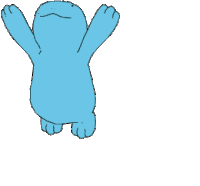
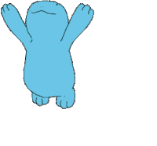
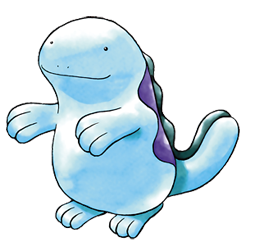

BLUEMOONFALLS
QUAGSIRE
While Ash and his friends were resting near Cherrygrove City, the GS
Ball they were carrying was taken by a Quagsire. The local Officer Jenny explained that all the Pokémon was
doing was taking it to Blue Moon Falls for an annual celebration.
Ash, both intrigued and eager to get the Ball back, decided to investigate this further. Later, he and his
friends stumbled across Blue Moon Falls. They witnessed hundreds of Quagsire with round-shaped objects. At
midnight, they tossed the objects into the air and used Water Gun to send them over the falls. The following
morning, all the objects, including the GS Ball, floated safely back down stream.
Blue Moon Falls is an animated series-exclusive location
in Johto. It is located close to Cherrygrove City.
Quagsire
is a light blue, bipedal, amphibious Pokémon. Its head is broad
and round, having little neck to distinguish it from the rest of its body. It has a wide mouth and tiny, black
eyes. A wavy, purple stripe runs down its back. Along its spine is a dark blue fin, which is larger on the male
than on the female. Quagsire 's hands and feet both have three digits. Its outer
layer of skin is slimy and slippery. Quagsire shares many similarities with its
Paldean relative, Clodsire.
Quagsire is carefree and sluggish by nature, although it is protective towards
Wooper. An unintelligent Pokémon,it tends to bump its head inadvertently while swimming and seems not to care.
It hunts for food by leaving its mouth wide open in water and waiting for its unaware prey to blunder in.
Because Quagsire does not move, it does not get very hungry and can afford to
wait for its food.
As shown in Pokémon Sleep, Quagsire leaves its mouth open even as it sleeps. It
is said seeing a Quagsire asleep with its mouth wide open is a sign it’s
possbily waiting for prey, while it dreams. Quagsire lives in clean bodies of
freshwater, as well as muddy swamps. During the day, Quagsire avoids sunlight by
submerging itself in the water.